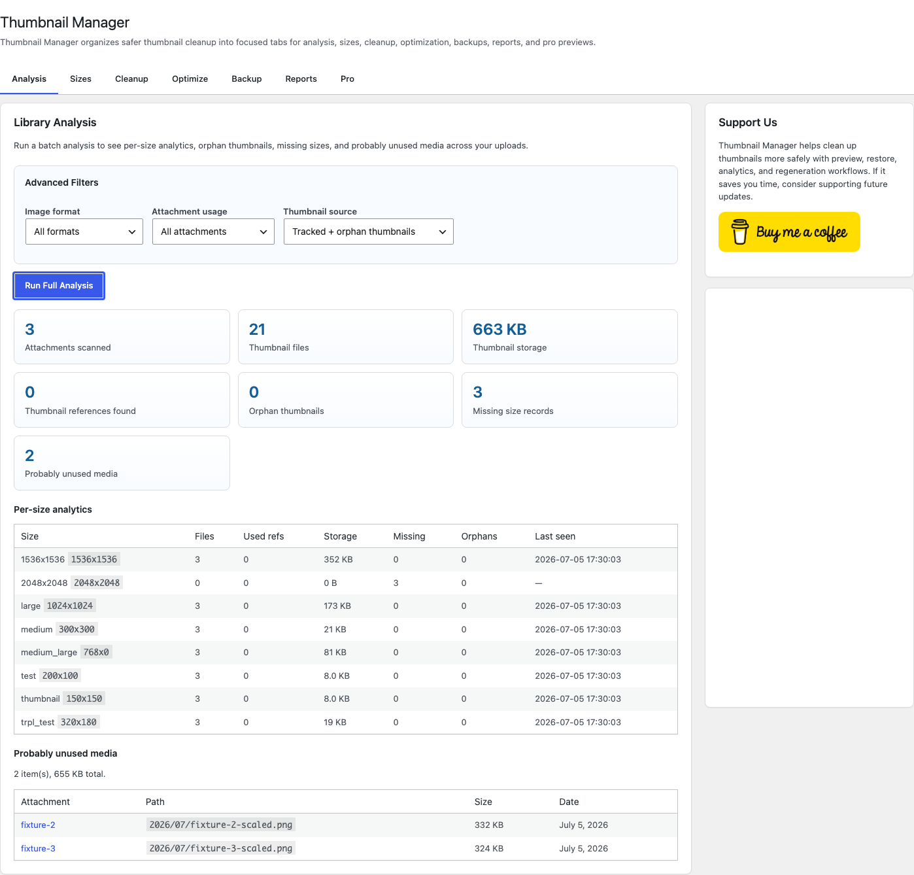
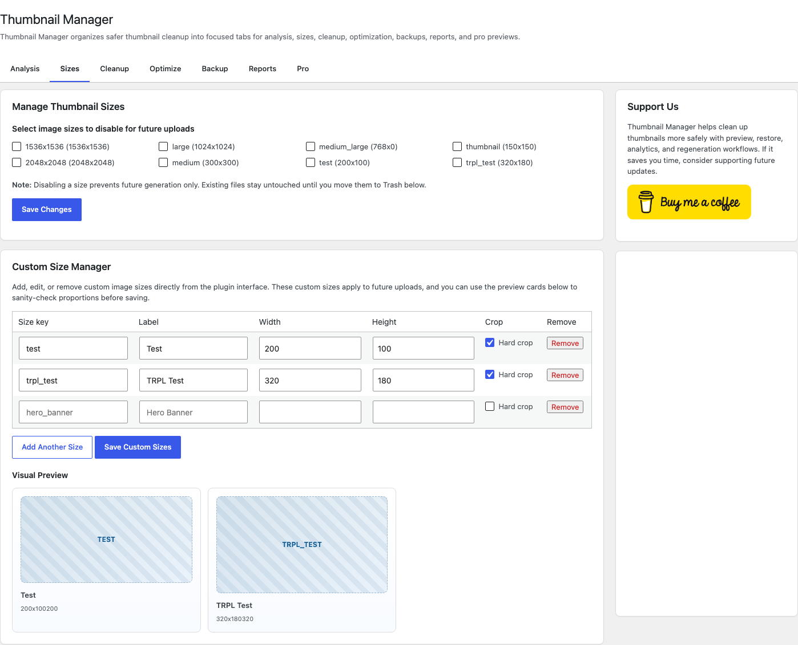
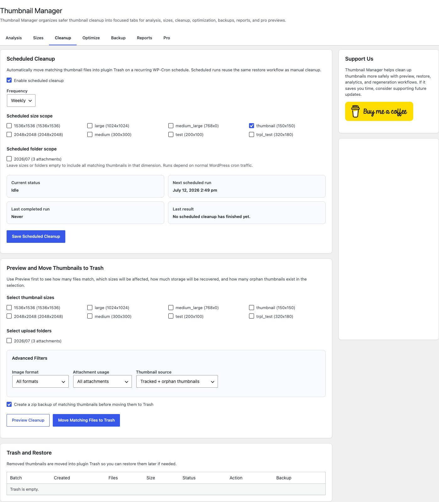

WordPress Media Cleanup
Thumbnail Manager
Analyze, preview, trash, restore, regenerate, and control image sizes without risking accidental thumbnail loss.
Preview Before Cleanup
Trash and Restore
Batch Regeneration
Orphan Detection
Unused Media Signals
Per-Size Analytics
Safer
Dry run and recovery-first workflow
Cleaner
Find bloated, orphaned, and missing sizes
Faster
Process large media libraries in batches
Storage Back Under Control
Purpose-built for WordPress site owners, developers, and agencies.

+ Per-size analytics

+ Preview before trash

+ Restore when needed